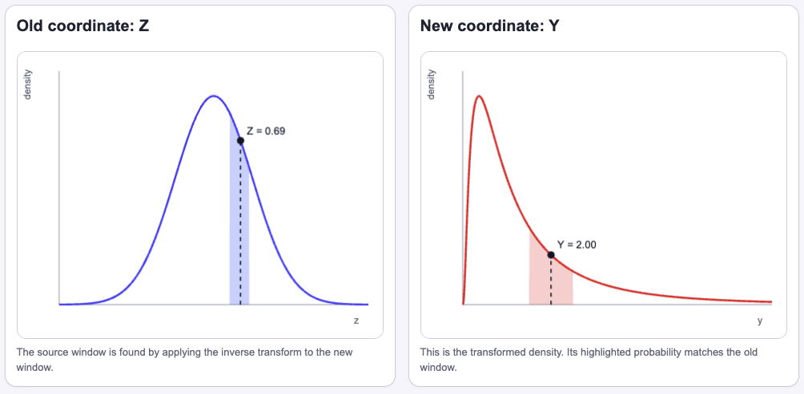
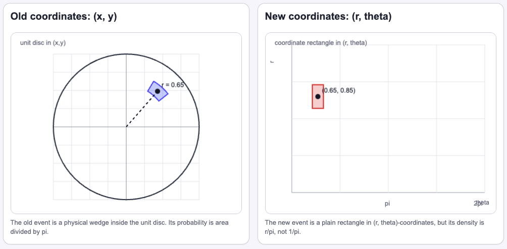

Research Log
Changing Variables Without Changing Probability
The Question
Given a continuous random variable \(X\) with density \(f_X\), how could we derive the probability density of its transformation \(g(X)\)? Formally:
Short answer: if \(g\) is differentiable and one-to-one, we map \(y\) back to \(x\), evaluate the old density there, and use the inverse derivative to compensate for the transformation's stretching.
If \(x=g^{-1}(y)\), then:
Why I Care
The goal of generative models is to learn how to sample from complex distributions, say images of cats. One approach is to learn how to transform samples drawn from a familiar distribution, e.g., a Gaussian distribution, into our target distribution.
As a concrete example:
We want to find a function \(g\) that transforms a sample from a simple base distribution into data, such as an image of a cat.
I want to understand what happens to density when a transformation stretches or compresses space, as a step toward making sense of normalizing flows.
Setup and Definitions
Let's motivate the math with a concrete case. Imagine a species in which the size of its members' ears determines how good they are at transcribing music.
Usually, the population has similar ear sizes. Even so, a small increase in ear size represents a huge gain in their capacity to transcribe music. Indeed, we can model this by letting
be the standardized ear size. Here, \(Z=0\) means an average ear size, and a negative \(Z\) means smaller than average—not a physically negative ear. We then let
be a measurement of how good they are at transcribing music. Our goal is to find the PDF of \(Y\).
Notice that the same event should have the same probability. Density is not probability by itself. In one dimension, it tells us how probability is packed into length. If a transformation stretches that length, the density must shrink so that the total probability stays the same.
For our ear-size example, this means:
For this kind of transformation, the general idea is as follows:
Let \(X\) be a continuous random variable with PDF \(f_X\), and let \(Y=g(X)\), where \(g\) is differentiable and one-to-one. If \(x=g^{-1}(y)\), then the PDF of \(Y\) is:
In \(\mathbb{R}^n\),
and, if \(\mathbf{x}=g^{-1}(\mathbf{y})\),
where
is the Jacobian matrix of the inverse transformation.
Minimal Derivation
Let's prove the continuous case when \(g\) is strictly increasing, using the cumulative distribution function (CDF):
Let \(x=g^{-1}(y)\). Differentiating with respect to \(y\) gives:
For decreasing transformations, the inequality reverses in the CDF step, and the final PDF formula uses the absolute value.
We can now solve our motivating problem:
Let \(Z\sim\mathcal{N}(0,1)\) and \(Y=e^Z\). Then \(Y\) is lognormal.
The inverse and its derivative are:
For \(y>0\), we get:
So:
for \(y>0\), and \(f_Y(y)=0\) for \(y\le 0\).
The Jacobian here is also interesting. The forward derivative tells us how much a small interval stretches. The inverse derivative in the density formula compensates for that stretch, so the same event keeps the same probability. That is how the Jacobian rescues us. Let's visualize this.

The polar picture shows the same idea in two dimensions. A \(dr\,d\theta\) rectangle represents a wedge with area \(r\,dr\,d\theta\), so the factor \(r\) is the Jacobian compensating for that change in area. That is why a point uniformly distributed over the unit disk has polar density \(f_{R,\Theta}(r,\theta)=r/\pi\).

What I Think I Learned
Under some mild conditions, we can compute the PDF of a transformed random variable. What clicked for me is that the Jacobian is not just a term in the formula: it tells us how much a transformation stretches lengths or areas while preserving probability.
Open Questions
- How is this transformation related to linear transformations?
- How do normalizing flows use these ideas?
- If we know the source and target distributions but not \(g\), can we learn the transformation?